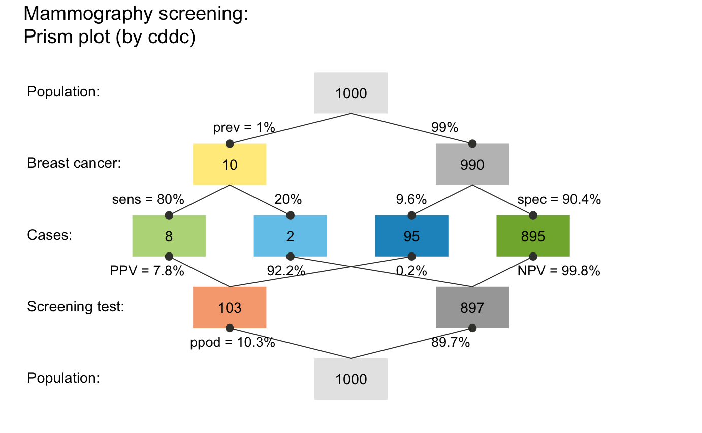

riskyr User Guide
Hansjörg Neth, SPDS, uni.kn
2018 02 01
Source:vignettes/A_user_guide.Rmd
A_user_guide.Rmd“Solving a problem simply means representing it so as to make the solution transparent.”
(H.A. Simon)1
What is the probability of a disease or clinical condition given a positive test result? This seems a simple and fairly common question, yet doctors, patients and medical students find it surprisingly difficult to answer.
Decades of research on probabilistic reasoning and risk literacy have shown that people are perplexed and struggle when information is expressed in terms of probabilities (e.g., see Mandel & Navarrete, 2015, and Trevethan, 2017, for overviews), but find it easier to understand and process the same information when it is expressed in terms of natural frequencies (see Gigerenzer and Hoffrage, 1995; Gigerenzer et al., 2007; Hoffrage et al., 2015).

riskyr is a toolbox for rendering risk literacy more transparent by facilitating such changes in representation and offering multiple perspectives on the dynamic interplay between probabilities and frequencies. The main goal of riskyr is to provide a long-term boost in risk literacy by fostering competence in understanding statistical information in domains such as health, weather, and finances (Hertwig & Grüne-Yanoff, 2017).
This guide first illustrates a typical problem and then helps you solving it by viewing risk-related information in a variety of ways. It proceeds in three steps:
We first present a typical problem in the probabilistic format that is commonly used in textbooks. This allows introducing some key probabilities, but also explains why both this problem and its traditional solution (via Bayes’ formula) remains opaque and is rightfully perceived as difficult.
We then translate the problem into natural frequencies and show how this facilitates its comprehension and solution.
-
Finally, we show how
riskyrrenders the problem more transparent by providing three sets of tools:A. A fancy calculator that allows the computation of probabilities and frequencies;
B. A set of functions that translate between different representational formats;
C. A variety of visualizations that illustrate relationships between frequencies and probabilities.
Motivation: A problem of probabilities
A basic motivation for developing riskyr was to facilitate our understanding of problems like the following:
Mammography screening
The probability of breast cancer is 1% for a woman at age 40 who participates in routine screening. If a woman has breast cancer, the probability is 80% that she will get a positive mammography. If a woman does not have breast cancer, the probability is 9.6% that she will also get a positive mammography.
A woman in this age group had a positive mammography in a routine screening.
What is the probability that she actually has breast cancer?(Hoffrage et al., 2015, p. 3)
Information provided and asked
Problems like this tend to appear in texts and tutorials on risk literacy and are ubiquitous in medical diagnostics. They typically provide some risk-related information (i.e., specific probabilities of some clinical condition and likelihoods of some decision or test of detecting its presence or absence) and ask for some other risk-related quantity. In the most basic type of scenario, we are given 3 essential probabilities:
- The prevalence of some target population (here: women at age 40) for some condition (breast cancer):
-
prev= \(p(\mathrm{cancer}) = 1\%\)
- The sensitivity of some decision or diagnostic procedure (here: a mammography screening test), which is the conditional probability:
-
sens= \(p(\mathrm{positive\ test}\ |\ \mathrm{cancer}) = 80\%\)
- The false alarm rate of this decision, diagnostic procedure or test, which is the conditional probability:
-
fart= \(p( \mathrm{positive\ test}\ |\ \mathrm{no\ breast\ cancer} ) = 9.6\%\)
and can also be expressed by its complement (aka. the test’s specificity):
-
spec= 1 –fart= \(p( \mathrm{negative\ test}\ |\ \mathrm{no\ cancer} ) = 90.4\%\)
The first challenge in solving this problem is to realize that the probability asked for is not the sensitivity sens (i.e., the probability of a positive test given cancer), but the reversed conditional probability (i.e., the probability of having cancer given a positive test). The clinical term for this quantity is the positive predictive value (PPV) or the test’s precision:
-
PPV= \(p( \mathrm{cancer}\ |\ \mathrm{positive\ test} )\) = ?
How can we compute the positive predictive value (PPV) from the information provided by the problem? In the following, we sketch three different paths to the solution.
Using Bayes’ formula
One way to solve problems concerning conditional probabilities is to remember and apply Bayes’ formula (which is why such problems are often called problems of “Bayesian reasoning”):
\[ p(H|D) = \frac{p(H) \cdot p(D|H) } {p(H) \cdot p(D|H) + p(\neg H) \cdot p(D|\neg H) } \]
In our example, we are looking for the probability of breast cancer (\(H\)) given a positive mammography test (\(D\)):
\[ p(\mathrm{cancer}\ |\ \mathrm{positive\ test}) = \frac{p(\mathrm{cancer}) \cdot p(\mathrm{positive\ test}\ |\ \mathrm{cancer}) } {p(\mathrm{cancer}) \cdot p(\mathrm{positive\ test}\ |\ \mathrm{cancer}) + p(\mathrm{no\ cancer}) \cdot p(\mathrm{positive\ test}\ |\ \mathrm{no\ cancer}) } \]
By inserting the probabilities identified above and knowing that the probability for the absence of breast cancer in our target population is the complementary probability of its presence (i.e., \(p\)(no cancer) = 1 – prev = 99%) we obtain:
\[ p(\mathrm{cancer}\ |\ \mathrm{positive\ test}) = \frac{1\% \cdot 80\% } { 1\% \cdot 80\% + 99\% \cdot 9.6\% } \approx\ 7.8\%\]
Thus, the information above and a few basic mathematical calculations tell us that the likelihood of a woman in our target population with a positive mammography screening test actually having breast cancer (i.e., the PPV of this mammography screening test for this population of women) is slightly below 8%.
Using natural frequencies
If you fail to find the Bayesian solution easy and straightforward, you are in good company: Even people who have studied and taught statistics find it difficult to think in these terms. Fortunately, researchers have discovered that a simple change in representation renders the same information much more transparent.
Consider the following problem description:
Mammography screening (
freq)10 out of every 1000 women at age 40 who participate in routine screening have breast cancer.
8 out of every 10 women with breast cancer will get a positive mammography.
95 out of every 990 women without breast cancer will also get a positive mammography.Here is a new representative sample of women at age 40 who got a positive mammography in a routine screening.
How many of these women do you expect to actually have breast cancer?(Hoffrage et al., 2015, p. 4)
Importantly, this version (freq) of the problem refers to a frequency of \(1000\) individuals of our original target population. It still provides the same probabilities as above, but specifies them in terms of natural frequencies (see Gigerenzer & Hoffrage, 1999, and Hoffrage et al., 2002, for clarifications of this concept):
- The prevalence of breast cancer in the target population:
-
prev= \(p(\mathrm{cancer}) = \frac{10}{1000} (= 1\%)\)
- The sensitivity of the mammography screening test, which is the conditional probability:
-
sens= \(p(\mathrm{positive\ test}\ |\ \mathrm{cancer}) = \frac{8}{10} (= 80\%)\)
- The test’s false alarm rate, which is the conditional probability:
-
fart= \(p( \mathrm{positive\ test}\ |\ \mathrm{no\ breast\ cancer} ) = \frac{95}{990} (\approx\ 9.6\%)\)
and can still be expressed by its complement (the test’s specificity):
-
spec= 1 –fart= \(p( \mathrm{negative\ test}\ |\ \mathrm{no\ cancer} ) = \frac{990 - 95}{990} = \frac{895}{990} (\approx\ 90.4\%)\)
Rather than asking us to compute a conditional probability (i.e., the PPV), the task now prompts us to imagine a new representative sample of women from our target population and focuses on the women with a positive test result. It then asks for a frequency: “How many of these women” do we expect to have cancer?
To provide any answer in terms of frequencies, we need to imagine a specific sample size \(N\). As the problem referred to a population of \(1000\) women, we conveniently pick a sample size of \(N = 1000\) women with identical characteristics (which is suggested by mentioning a “representative” sample) and ask: How many women with a positive test result actually have cancer?2
In this new sample, the frequency of women with cancer and with a positive test result should match the numbers of the original sample. Hence, we can assume that \(10\) out of \(1000\) women have cancer (prev) and \(8\) of the \(10\) women with cancer receive a positive test resul (sens). Importantly, \(95\) out of the \(990\) women without cancer also receive a positive test result (fart). Thus, the number of women with a positive test result is \(8 + 95 = 103\), but only \(8\) of them actually have cancer. Of course the ratio \(\frac{8}{103}\) is identical to our previous probability (of slightly below 7.8%). Incidentally, the reformulation in terms of frequencies protected us from erroneously taking the sensitivity (of sens = \(\frac{8}{10} = 80\%\)) as an estimate of the desired frequency. Whereas it is easy to confuse the term \(p( \mathrm{positive\ test}\ |\ \mathrm{cancer} )\) with \(p( \mathrm{cancer}\ |\ \mathrm{positive\ test} )\) when the task is expressed in terms of probabilities, it is clearly unreasonable to assume that about 800 of 1000 women (i.e., 80%) actually have cancer (since the prevalence in the population was specified to be 10 in 1000, i.e., 10%). Thus, reframing the problem in terms of frequencies made us immune against a typical mistake.
Using riskyr
Reframing the probabilistic problem in terms of frequencies made its solution easier. This is neat and probably one of the best tricks in risk literacy education (as advocated by Gigerenzer & Hoffrage, 1995; Gigerenzer 2002; 2014). While it is good to have a way to cope with tricky problems, it would be even more desirable to actually understand the interplay between probabilities and frequencies in risk-related tasks and domains. This is where riskyr comes into play.3

riskyr provides a set of basic risk literacy tools in R. As we have seen, the problems humans face when dealing with risk-related information are less of a computational, and more of a representational nature. As a statistical programming language, R is a pretty powerful computational tool, but for our present purposes it is more important that R is also great for designing and displaying aesthetic and informative visualizations. By applying these qualities to the task of training and instruction in risk literacy, riskyr is a toolbox that renders risk literacy education more transparent.
Risk vs. uncertainty
To clarify the concept of “risk” used in this context: In both basic research on the psychology of judgment and decision making and more applied research on risk perception and risk communication, the term risk refers to information or decisions for which all options and their consequences are known and probabilities for the different outcomes can be provided. This notion of risk is typically contrasted with the wider notion of uncertainty in which options or probabilities are unknown or cannot be quantified.4
For our present purposes, the notion of risk-related information refers to any scenario in which some events are determined by probabilities. A benign example of a risk-related situation is the riskyr start-up message: Every time you load the package, the dice are cast and determine which particular message (out of a range of possible messages) is shown. Even if you notice this, determining the exact probability of a message would require extensive experience, explicit information (e.g., us telling you that we use R’s sample function to randomly select 1 of 5 possible messages), or cheating (by peeking at the source code). In real life, the events of interest are vastly more complex and numerous and both our experience and options for cheating are subject to hard constraints. Thus, provided we do not want to regress into superstition, we need science to figure out probabilities and transparent risk communication for understanding them.
Promoting risk perception and communication
riskyr facilitates risk perception and promotes a deeper understanding of risk-related information in three ways:5
by organizing data structures and computational functions in useful ways;
by providing translations between probabilities and frequencies;
by providing transparent visualizations that illustrate relationships between variables and representations.
If others find the ways in which riskyr computes, transforms, and represents risks helpful or useful, riskyr may facilitate teaching and training efforts in risk literacy and generally hopes to promote a more transparent communication of risk-related information. In the following, we show how we can address the above problem by using three types of tools provided by riskyr.
A. A fancy calculator
riskyr provides a set of functions that allows us to calculate various desired outputs (probabilities and frequencies) from given inputs (probabilities and frequencies). For instance, the following function computes the positive predictive value PPV from the 3 essential probabilities prev, sens, and spec (with spec = 1 – fart) that were provided in the original problem:
library("riskyr") # loads the package
#> Welcome to riskyr!
#>
#> hi fa
#> +
#> mi cr
#>
#> riskyr.guide() opens user guides.
comp_PPV(prev = .01, sens = .80, spec = (1 - .096))
#> [1] 0.07763975It’s good to know that riskyr can apply Bayes’ formula, but so can any other decent calculator — including my brain on a good day and some environmental support in the form of paper and pencil. The R in riskyr only begins to make sense when considering functions like the following: comp_prob_prob computes probabilities from probabilities (hence its name). More precisely, comp_prob_prob takes 3 essential probabilities as inputs and returns a list of 13 probabilities as its output:
# Compute probabilities from 3 essential probabilities: # Input arguments:
p1 <- comp_prob_prob(prev = .01, sens = .80, spec = NA, fart = .096) # prev, sens, NA, fart
p2 <- comp_prob_prob(prev = .01, sens = .80, spec = .904, fart = NA) # prev, sens, spec, NA
p3 <- comp_prob_prob(prev = .01, sens = .80, spec = .904, fart = .096) # prev, sens, spec, fart
# Check equality of outputs:
all.equal(p1, p2)
#> [1] TRUE
all.equal(p2, p3)
#> [1] TRUEThe probabilities provided need to include a prevalence prev, a sensitivity sens, and either the specificity spec or the false alarm rate fart (with spec = 1 – fart). The code above illustrates 3 different ways in which 3 of these “essential” probabilities can be provided. Thus, the assigned objects p1, p2, and p3 are all equal to each other.
The probabilities computed by these “essential” probabilities include the PPV, which can be obtained by asking for p1$PPV = 0.0776398. But the object computed by comp_prob_prob is actually a list of 10 probabilities and can be inspected by printing p1:
p1
#> $prev
#> [1] 0.01
#>
#> $sens
#> [1] 0.8
#>
#> $mirt
#> [1] 0.2
#>
#> $spec
#> [1] 0.904
#>
#> $fart
#> [1] 0.096
#>
#> $ppod
#> [1] 0.10304
#>
#> $PPV
#> [1] 0.07763975
#>
#> $FDR
#> [1] 0.9223602
#>
#> $NPV
#> [1] 0.9977702
#>
#> $FOR
#> [1] 0.002229754
#>
#> $acc
#> [1] 0.90296
#>
#> $p_acc_hi
#> [1] 0.00885975
#>
#> $p_err_fa
#> [1] 0.9793899The list of probabilities computed includes the 3 essential probabilities (prev, sens, and spec or fart) and the desired probability (p1$PPV = 0.0776398), but also many other probabilities that may have been asked instead. (See the vignette on data formats for details on these probabilities.)
Incidentally, as R does not care whether probabilities are entered as decimal numbers or fractions, we can check whether the 2nd version of our problem — the version reframed in terms of frequencies — yields the same solution:
# Compute probabilities from 3 ratios of frequencies (probabilities): # Input arguments:
p4 <- comp_prob_prob(prev = 10/1000, sens = 8/10, spec = NA, fart = 95/990) # prev, sens, NA, fart
p4$PPV
#> [1] 0.0776699This shows that the PPV computed in this version is only marginally different (p4$PPV = 0.0776699). More importantly, it is identical to the ratio \(\frac{8}{103}\) = 0.0776699.
B. Translating between formats
Another function of riskyr is to translate between representational formats. This translation comes in two varieties:
Computing frequencies from probabilities
# Compute frequencies from probabilities:
f1 <- comp_freq_prob(prev = .01, sens = .80, spec = NA, fart = .096, N = 1000)
f2 <- comp_freq_prob(prev = 10/1000, sens = 8/10, spec = NA, fart = 95/990, N = 1000)
# Check equality of outputs:
all.equal(f1, f2)
#> [1] TRUEBy providing our original probabilities to the function comp_freq_prob we can compute a list of frequencies from probabilities (hence the name). To compute frequencies for the specific sample size of 1000 individuals, we need to provide N = 1000 as an additional argument. As before, it does not matter whether the probabilities are supplied as decimal numbers or as ratios (as long as they actually are probabilities, i.e., numbers from 0 to 1).
As the ratio fart = 95/990 is not exactly equal to fart = .096 (but rather 95/100 = 0.95) the two versions of our problem actually vary by a bit. Here, the results f1 and f2 are only identical because the function comp_freq_prob rounds to nearest integers by default. To compute more precise frequencies (that no longer round to integers), use the round = FALSE argument:
# Compute frequencies from probabilities (without rounding):
f3 <- comp_freq_prob(prev = .01, sens = .80, spec = NA, fart = .096, N = 1000, round = FALSE)
f4 <- comp_freq_prob(prev = 10/1000, sens = 8/10, spec = NA, fart = 95/990, N = 1000, round = FALSE)
## Check equality of outputs:
all.equal(f3, f4) # => shows slight differences in some frequencies:As before, the function comp_freq_prob does not compute only one frequency, but a list of 11 frequencies. Their names and values can be inspected by printing f1:
f1
#> $N
#> [1] 1000
#>
#> $cond_true
#> [1] 10
#>
#> $cond_false
#> [1] 990
#>
#> $dec_pos
#> [1] 103
#>
#> $dec_neg
#> [1] 897
#>
#> $dec_cor
#> [1] 903
#>
#> $dec_err
#> [1] 97
#>
#> $hi
#> [1] 8
#>
#> $mi
#> [1] 2
#>
#> $fa
#> [1] 95
#>
#> $cr
#> [1] 895In this list, the sample of N = \(1000\) women is split into 3 different subgroups. For instance, the \(10\) women with cancer appear as cond_true cases, whereas the 990 without cancer are listed as cond_false cases. The \(8\) women with cancer and a positive test result appear as hits hi and the 95 women who receive a positive test result without having cancer are listed as false alarms fa. (See the vignette on data formats for details on all frequencies.)
Computing probabilities from frequencies
A translator between 2 representational formats should work in both directions. Consequently, riskyr also allows to compute probabilities by providing frequencies:
# Compute probabilities from frequencies:
p5 <- comp_prob_freq(hi = 8, mi = 2, fa = 95, cr = 895) # => provide 4 essential frequenciesFortunately, the comp_prob_freq does not require all 11 frequencies that were returned by comp_freq_prob and contained in the list of frequencies f1. Instead, we must provide comp_prob_freq with the 4 essential frequencies that were listed as hi, mi, fa, and cr in f1. The resulting probabilities (saved in p5) match our list of probabilities from above (saved in p4):
# Check equality of outputs:
all.equal(p5, p4)Switching back and forth
More generally, when we translate between formats twice — first from probabilities to frequencies and then from the resulting frequencies to probabilities — the original probabilities appear again:
# Pick 3 random probability inputs:
rand.p <- runif(n = 3, min = 0, max = 1)
rand.p
# Translation 1: Compute frequencies from probabilities (without rounding):
freq <- comp_freq_prob(prev = rand.p[1], sens = rand.p[2], spec = rand.p[3], round = FALSE)
# Translation 2: Compute probabilities from frequencies:
prob <- comp_prob_freq(hi = freq$hi, mi = freq$mi, fa = freq$fa, cr = freq$cr)
## Verify that results match original probabilities:
all.equal(prob$prev, rand.p[1])
all.equal(prob$sens, rand.p[2])
all.equal(prob$spec, rand.p[3])Similarly, going full circle from frequencies to probabilities and back returns the original frequencies:
# Pick 4 random frequencies:
rand.f <- round(runif(n = 4, min = 0, max = 10^3), 0)
rand.f
# sum(rand.f)
# Translation 1: Compute probabilities from frequencies:
prob <- comp_prob_freq(hi = rand.f[1], mi = rand.f[2], fa = rand.f[3], cr = rand.f[4])
# prob
# Translation 2: Compute frequencies from probabilities (for original N, without rounding):
freq <- comp_freq_prob(prev = prob$prev, sens = prob$sens, spec = prob$spec,
N = sum(rand.f), round = FALSE)
# freq
# Verify that results match original frequencies:
all.equal(freq$hi, rand.f[1])
all.equal(freq$mi, rand.f[2])
all.equal(freq$fa, rand.f[3])
all.equal(freq$cr, rand.f[4])To obtain the same results when translating back and forth between probabilities and frequencies, it is important to switch off rounding when computing frequencies from probabilities with comp_freq_prob. Similarly, we need to scale the computed frequencies to the original population size N to arrive at the original frequencies.
All at once: Defining a riskyr scenario
In the likely case that you are less interested in specific metrics or formats and only want to get a quick overview of the key variables of a risk-related situation, you can always define a riskyr scenario:
s <- riskyr(scen_lbl = "Mammography screening",
cond_lbl = "breast cancer",
cond_true_lbl = "cancer", cond_false_lbl = "no cancer",
dec_lbl = "screening test",
dec_pos_lbl = "predict cancer", dec_neg_lbl = "predict no cancer",
prev = .01,
sens = .80,
spec = NA,
fart = .096)This riskyr command defined a new scenario s and initialized it with a suitable population size of N = 1000. Use the summary command to get an overview over its key parameters:
summary(s) # provides an overview over key scenario information:
#> Scenario: Mammography screening
#>
#> Condition: breast cancer
#> Decision: screening test
#> Population: Population
#> N = 1000
#> Source: Source information
#>
#> Probabilities:
#>
#> Essential probabilities:
#> prev sens mirt spec fart
#> 0.010 0.800 0.200 0.904 0.096
#>
#> Other probabilities:
#> ppod PPV NPV FDR FOR acc
#> 0.103 0.078 0.998 0.922 0.002 0.903
#>
#> Frequencies:
#>
#> by conditions:
#> cond_true cond_false
#> 10 990
#>
#> by decision:
#> dec_pos dec_neg
#> 103 897
#>
#> by correspondence (of decision to condition):
#> dec_cor dec_err
#> 903 97
#>
#> 4 essential (SDT) frequencies:
#> hi mi fa cr
#> 8 2 95 895
#>
#> Accuracy:
#>
#> acc:
#> 0.90296The fastest way to get an overview over a scenario s is by plotting it:
plot(s) # a prism/network diagram of key frequencies and probabilities (by default):
There are many other types of plots and customization options available. In the following, we explain different visualizations by introducing their corresponding plotting functions. For the impatient: The Quick start primer explains how to directly plot different visualizations of a given scenario.
C. Visualizing relationships between formats and variables
Inspecting the lists of probabilities and frequencies shows that the two problem formulations cited above are only two possible instances out of an array of many alternative formulations. Essentially, the same scenario can be described in a variety of variables and formats. Gaining deeper insights into the interplay between these variables requires a solid understanding of the underlying concepts and their mathematical definitions. To facilitate the development of such an understanding, riskyr recruits the power of visual representations and shows the same scenario from a variety of angles and perspectives. It is mostly this graphical functionality that supports riskyr’s claim on being a toolbox for rendering risk literacy more transparent. Thus, in addition to being a fancy calculator and a translator between formats, riskyr is mostly a machine that turns risk-related information into pretty pictures.
riskyr provides many alternative visualizations that depict the same risk-related scenario in the form of different representations. As each type of graphic has its own properties and perspective — strengths that emphasize or illuminate some particular aspect and weaknesses that hide or obscure others — the different visualizations are somewhat redundant, yet complement and support each other.6
Here are some examples that depict particular aspects of the scenario described above:
Icon array
A straightforward way of plotting an entire population of individuals is provided by an icon array that represents each individual as a symbol which is color-coded:
plot_icons(prev = .01, sens = .80, spec = NA, fart = .096, N = 1000,
icon_types = c(21, 21, 22, 22),
title_lbl = "Mammography screening")An icon array showing the mammography scenario for a population of 1000 individuals.
Tree diagram
Perhaps the most intuitive visualization of the relationships between probability and frequency information in our above scenario is provided by a tree diagram that shows the population and the frequency of subgroups as its nodes and the probabilities as its edges:
plot_prism(prev = .01, sens = .80, spec = NA, fart = .096, N = 1000,
by = "cd", title_lbl = "Mammography screening")A tree diagram that applies the provided probabilities and frequencies to a population of 1000 individuals.
Importantly, the plot_prism function plot a simple frequency tree when providing a single perspective argument by = "cd" (as opposed to its default by = "cddc"). Here, it is called with the same 3 essential probabilities (prev, sens, and spec) and 1 frequency (the number of individuals N of our sample or population). But in addition to computing risk-related information (e.g., the number of individuals in each of the 4 subgroups at the 2nd level of the tree), the tree diagram visualizes crucial dependencies and relationships between frequencies and probabilities. For instance, the diagram illustrates that the number of true positives (hi) depends on both the condition’s prevalence (prev) and the decision’s sensitivity (sens), or that the decision’s specificity spec can be expressed and computed as the ratio of the number of true negatives (cr) divided by the number of unaffected individuals (cond_false cases).
Area plot
An alternative way to split a group of individuals into subgroups depicts the population as a square and dissects it into various rectangles that represent parts of the population. In the following area plot (aka. mosaic plot), the relative proportions of rectangle sizes represent the relative frequencies of the corresponding subgroups:
plot_area(prev = .01, sens = .80, spec = NA, fart = .096, N = 1000,
title_lbl = "Mammography screening")An area plot in which area sizes represent the probabilities/relative frequencies of subgroups.
The vertical split dissects the population into two subgroups that correspond to the frequency of cond_true and cond_false cases in the tree diagram above. The prev value of 1% yields a slim vertical rectangle on the left. (For details and additional options of the plot_area function, see the documentation of ?plot_area.)
Bar plot
The tree diagrams from above can also be depicted as a vertical bar plot:
plot_bar(prev = .01, sens = .80, spec = NA, fart = .096, N = 1000,
by = "all", dir = 2, title_lbl = "Mammography screening")(The plot is not shown here, but please go ahead and create it for yourself.)
However, due to a number of categories with a very low number of members, many bars are barely visible (which is why they are not shown here).
Prism plot
The prism plot (called network diagram in version 0.1.0 of riskyr) is a generalization of the tree diagram (see Wassner et al., 2004). It plots 9 different frequencies (computed by comp_freq_prop and comp_freq_freq and contained in freq) as nodes of a single graph and depicts 12 probabilities (computed by comp_prop_prop and comp_prop_freq and contained in prob) as edges between these nodes. Thus, the network/prism diagram integrates 2 perspectives of the tree diagrams. By scaling nodes by either frequency or probability, riskyr visualizes the interplay of frequencies and probabilities in a variety of ways:
plot_prism(prev = .01, sens = .80, spec = NA, fart = .096, N = 1000,
by = "cddc", area = "sq", title_lbl = "Mammography screening")A prism plot that integrates 2 tree diagrams and represents relative frequency by area size.
Changing the by and area options provides a variety of perspectives on a scenario. Additionally, all plotting functions provide summary information on scenario parameters and current accuracy metrics on the lower margin. Setting mar_notes = FALSE gets rid of this display. Similarly, setting scen_lbl = "" removes the title and sub-title above the diagrams.
Alternative perspectives
The variety of different graphical options provided by riskyr can be overwhelming at first – but fortunately the default options work reasonably well in most cases. In the following, we illustrate some additional parameters and points, and trust that you can evaluate and explore the corresponding commands yourself.
Both the tree/prism diagrams and the mosaic plots shown above adopted a particular perspective by splitting the population into 2 subgroups by condition (via the default option by = "cd"). Rather than emphasizing the difference between cond_true and cond_false cases, an alternative perspective could ask: How many people are detected as positive vs. negative by the test? By using the option by = "dc", the tree diagram splits the population by decisions into dec_pos and dec_neg cases:
plot_prism(prev = .01, sens = .80, spec = NA, fart = .096, N = 1000,
by = "dc", title_lbl = "Mammography screening", col_pal = pal_mod)(Note that using the col_pal argument changed the color scheme to the pre-defined pal_mod color palette.)
Similarly, we can plot a tree diagram that splits the population by accuracy into cases of TRUE and FALSE (dec_cor and dec_err) decisions:
plot_prism(prev = .01, sens = .80, spec = NA, fart = .096, N = 1000,
by = "ac", title_lbl = "Mammography screening")The same perspectives can also be applied to other plots. For instance, the population of the area/mosaic plot can first be split by decisions (i.e., horizontally) by specifying the options by = "cddc" and p_split = "h":
plot_area(prev = .01, sens = .80, spec = NA, fart = .096, N = 1000,
by = "cddc", # show by condition x decision
p_split = "h", # horizontal perspective is primary
title_lbl = "Mammography screening")riskyr uses a consistent color scheme to represent the same subgroups across different graphs. If this color coding is not sufficient, plotting the tree diagram with the option area = "hr" further highlights the correspondence by representing the relative frequencies of subgroups by the proportions of rectangles:
plot_prism(prev = .01, sens = .80, spec = NA, fart = .096, N = 1000,
by = "dc", area = "hr", title_lbl = "Mammography screening")Incidentally, as both an icon array and a mosaic plot depict probability by area size, both representations can be translated into each other. Even when relaxing the positional constraint of icons in the icon array, the similarity is still visible:
plot_icons(prev = .01, sens = .80, spec = NA, fart = .096, N = 1000,
arr_type = "mosaic", icon_types = c(21, 21, 22, 22), icon_size = 2,
title_lbl = "Mammography screening")Can you spot cases of hits (true positives) and misses (false negatives)? (Hint: Their frequency is 8 and 2, respectively.)
For more details, see the documentation and examples of the visualization functions (e.g., plot_area, plot_icon, and plot_prism).
References
Gigerenzer, G. (2002). Reckoning with risk: Learning to live with uncertainty. London, UK: Penguin.
Gigerenzer, G. (2014). Risk savvy: How to make good decisions. New York, NY: Penguin.
Gigerenzer, G., & Gaissmaier, W. (2011). Heuristic decision making. Annual Review of Psychology, 62, 451–482. [Available online]
Gigerenzer, G., Gaissmaier, W., Kurz-Milcke, E., Schwartz, L., & Woloshin, S. (2007). Helping doctors and patients make sense of health statistics. Psychological Science in the Public Interest, 8, 53–96. [Available online]
Gigerenzer, G., & Hoffrage, U. (1995). How to improve Bayesian reasoning without instruction: Frequency formats. Psychological Review, 102, 684–704.
Gigerenzer, G., & Hoffrage, U. (1999). Overcoming difficulties in Bayesian reasoning: A reply to Lewis and Keren (1999) and Mellers and McGraw (1999). Psychological Review, 106, 425–430.
Hertwig, R., & Grüne-Yanoff, T. (2017). Nudging and boosting: Steering or empowering good decisions. Perspectives on Psychological Science, 12, 973–986.
Hoffrage, U., Gigerenzer, G., Krauss, S., & Martignon, L. (2002). Representation facilitates reasoning: What natural frequencies are and what they are not. Cognition, 84, 343–352.
Hoffrage, U., Krauss, S., Martignon, L., & Gigerenzer, G. (2015). Natural frequencies improve Bayesian reasoning in simple and complex inference tasks. Frontiers in Psychology, 6, 1473. [Available online]
Hoffrage, U., Lindsey, S., Hertwig, R., & Gigerenzer, G. (2000). Communicating statistical information. Science, 290, 2261–2262.
Khan, A., Breslav, S., Glueck, M., & Hornbæk, K. (2015). Benefits of visualization in the mammography problem. International Journal of Human-Computer Studies, 83, 94–113.
Kurzenhäuser, S., & Hoffrage, U. (2002). Teaching Bayesian reasoning: An evaluation of a classroom tutorial for medical students. Medical Teacher, 24, 516–521.
Kurz-Milcke, E., Gigerenzer, G., & Martignon, L. (2008). Transparency in risk communication. Annals of the New York Academy of Sciences, 1128, 18–28.
Mandel, D. R. & Navarrete, G. (2015). Editorial: Improving Bayesian reasoning: What works and why? Frontiers in Psychology, 6, 1872. [Available online]
Micallef, L., Dragicevic, P., & Fekete, J.-D. (2012). Assessing the effect of visualizations on Bayesian reasoning through crowd-sourcing. IEEE Transactions on Visualization and Computer Graphics, 18, 2536–2545.
Neth, H., & Gigerenzer, G. (2015). Heuristics: Tools for an uncertain world. In R. Scott & S. Kosslyn (Eds.), Emerging trends in the social and behavioral sciences. New York, NY: Wiley Online Library. [Available online]
Sedlmeier, P., & Gigerenzer, G. (2001). Teaching Bayesian reasoning in less than two hours. Journal of Experimental Psychology: General, 130, 380–400.
Strevens, M. (2013). Tychomancy: Inferring probability from causal structure. Cambridge, MA: Harvard University Press.
Trevethan, R. (2017). Sensitivity, specificity, and predictive values: Foundations, pliabilities, and pitfalls in research and practice. Frontiers in Public Health, 5, 307. [Available online]
Wassner, C., Martignon, L., & Biehler, R. (2004). Bayesianisches Denken in der Schule. Unterrichtswissenschaft, 32, 58–96.
Resources
The following resources and versions are currently available:
| Type: | Version: | URL: |
|---|---|---|
A. riskyr (R package): |
Release version | https://CRAN.R-project.org/package=riskyr |
| Development version | https://github.com/hneth/riskyr | |
B. riskyrApp (R Shiny code): |
Online version | http://riskyr.org |
| Development version | https://github.com/hneth/riskyrApp | |
| C. Online documentation: | Release version | https://hneth.github.io/riskyr |
| Development version | https://hneth.github.io/riskyr/dev |
Contact

We appreciate your feedback, comments, or questions.
Please report any
riskyr-related issues at https://github.com/hneth/riskyr/issues.Contact us at contact.riskyr@gmail.com with any comments, questions, or suggestions.
All riskyr vignettes
| Nr. | Vignette | Content |
|---|---|---|
| A. | User guide | Motivation and general instructions |
| B. | Data formats | Data formats: Frequencies and probabilities |
| C. | Confusion matrix | Confusion matrix and accuracy metrics |
| D. | Functional perspectives | Adopting functional perspectives |
| E. | Quick start primer | Quick start primer |
Simon, H.A. (1996). The Sciences of the Artificial (3rd ed.). The MIT Press, Cambridge, MA. (p. 132).↩
The actual sample size
Nchosen is irrelevant, but the numbers are easier to calculate whenNis a round number and at least as large as the frequencies mentioned in the problem.↩Full disclosure: As enthusiastic students and colleagues of Gerd Gigerenzer, we think that his recommendations are insightful, convincing, and correct. However, while expressing probabilities in terms of natural frequencies promotes a better understanding of risks, it does not automatically lead to a better understanding of conditional probabilities per se.
riskyrextends beyond translations between representational formats by visualizing the interplay between frequencies and probabilities in a variety of ways.↩See Gigerenzer and Gaissmaier (2011) and Neth and Gigerenzer (2015) for discussions on different type of decision strategies that correspond to the distinction between risk and uncertainty.↩
The
riskyrlogo (showing 3 different dice facets) also represents its functionality in several ways:
1. First, each facet provides a frequency (e.g., the number \(3\)). Nevertheless, the dice is a paradigmatic example of a device that generates probabilities. (See Strevens, 2013, for inferring probabilistic properties from physical devices.)
2. The 3 facets indicate the 3 perspectives that classify a population of \(N\) individuals into 3 binary categories of medical diagnostics: (1) by condition (true vs. false), (2) by decision (positive vs. negative), and (3) by accuracy/correspondence (correct vs. incorrect).
3. Any individual facet is informative by itself — and often all that is of interest. However, to really understand the mechanism of the risk-generating device, it is crucial to view the dice from multiple angles.riskyrprovides alternative perspectives that — when viewed together — render issues of risk literacy more transparent.
4. The 3 facets also hint atriskyr’s 3 key functions of (1) organizing information, (2) translating between representational formats, and (3) visualizing relationships between variables.↩Although we tend to be enthusiastic about the potential of visualizations, we should not expect graphs to provide a magic potion for solving all problems of understanding. (For instance, see Micallef et al. (2012) and Khan et al. (2015) for somewhat sceptical and sobering studies on the potential benefits of different static representations of Bayesian problems.)↩